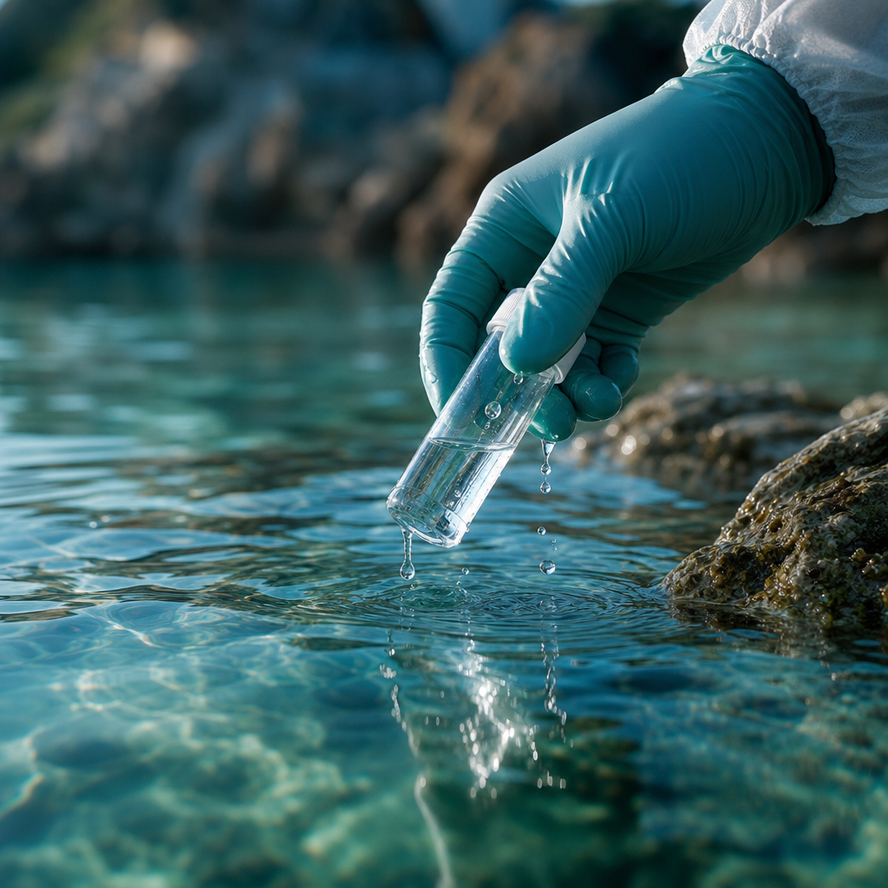
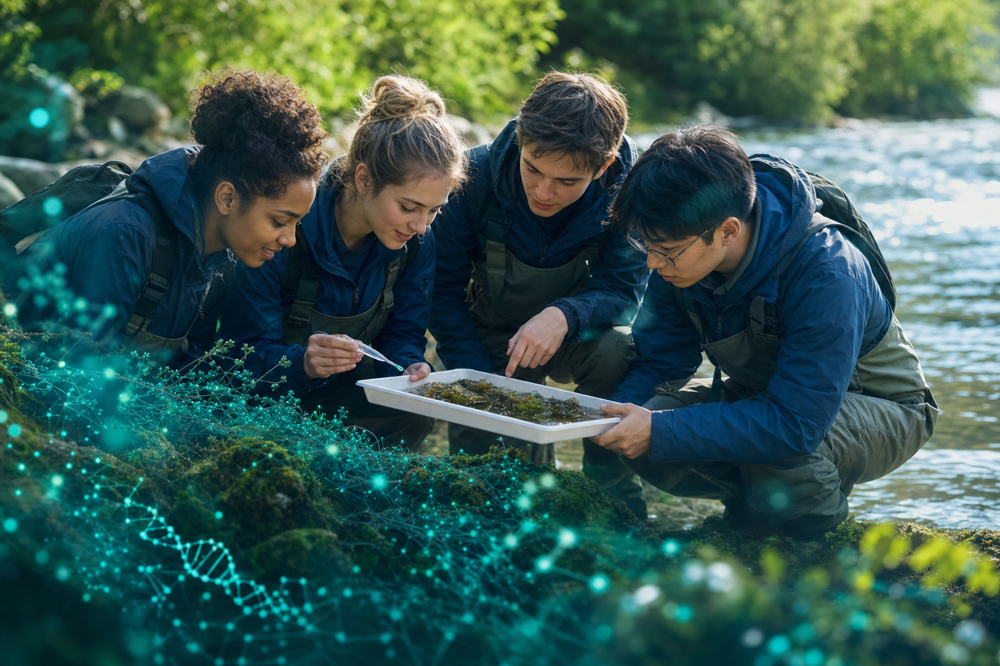
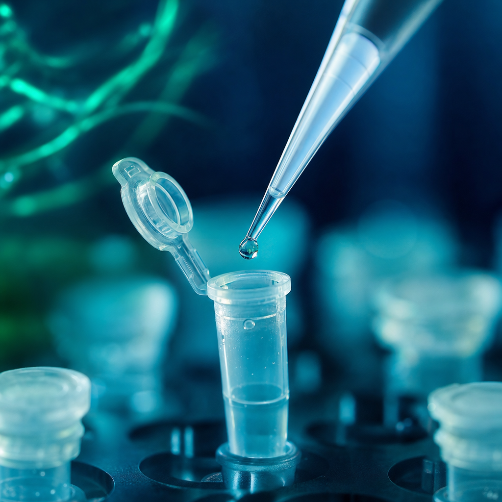
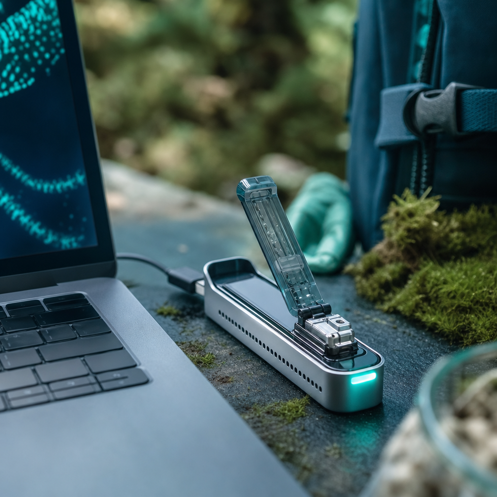
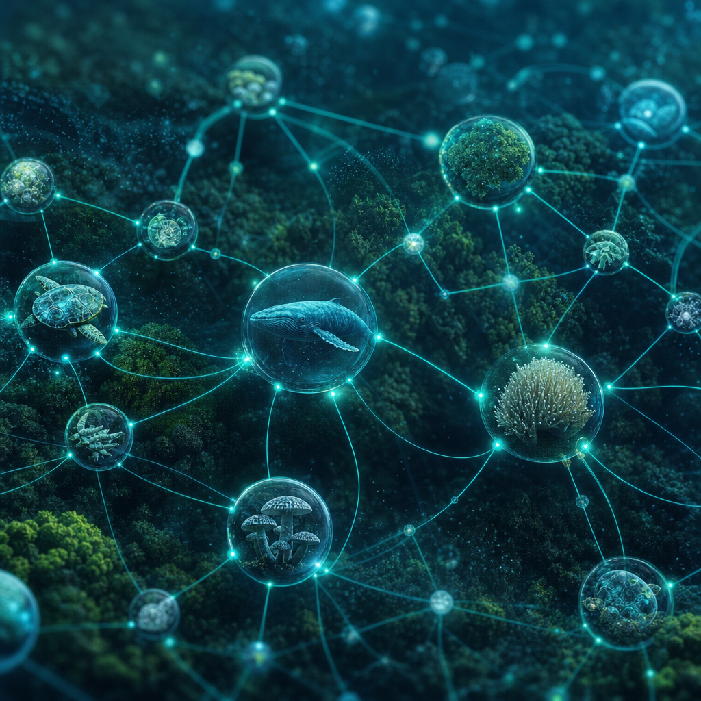
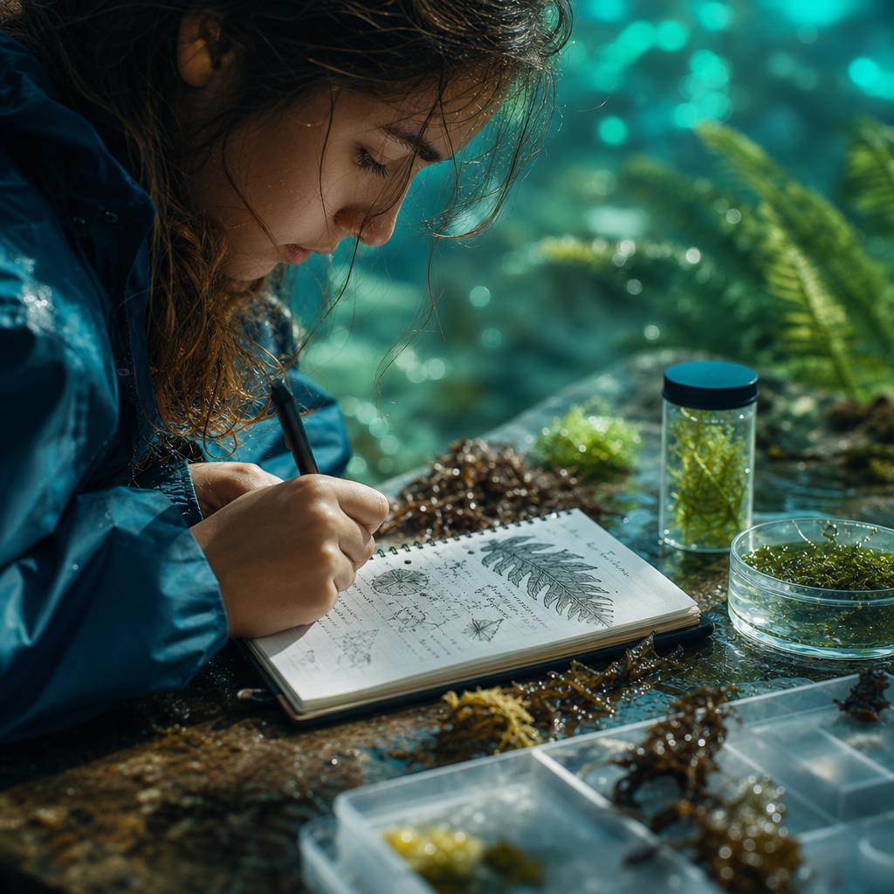
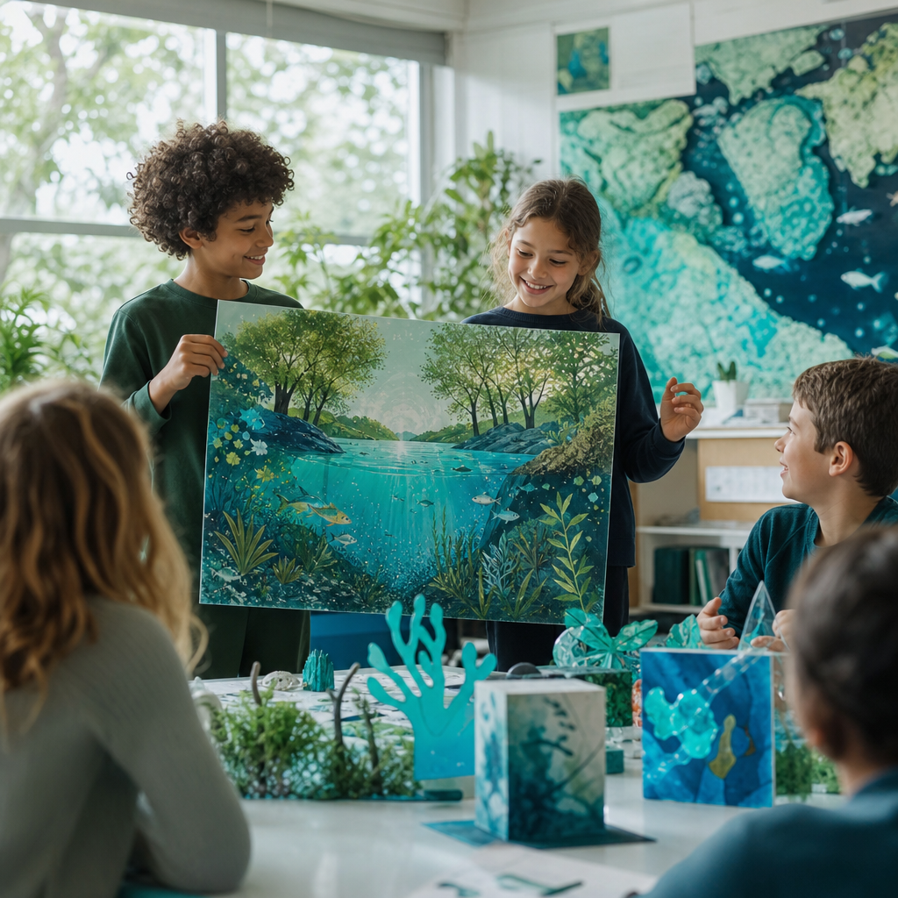
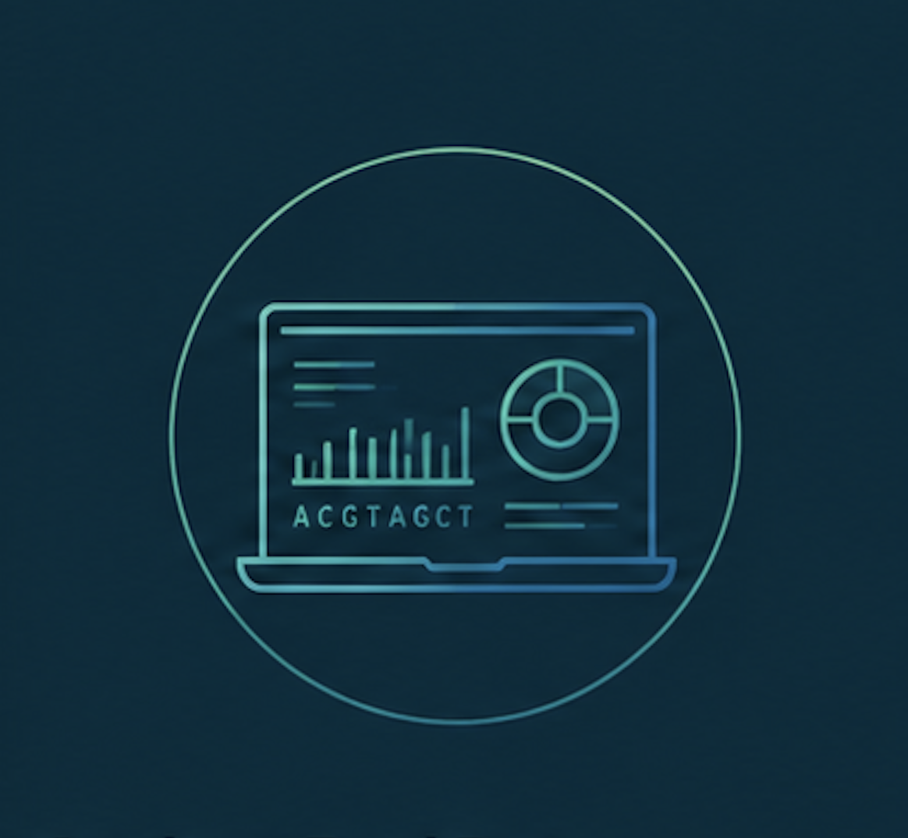
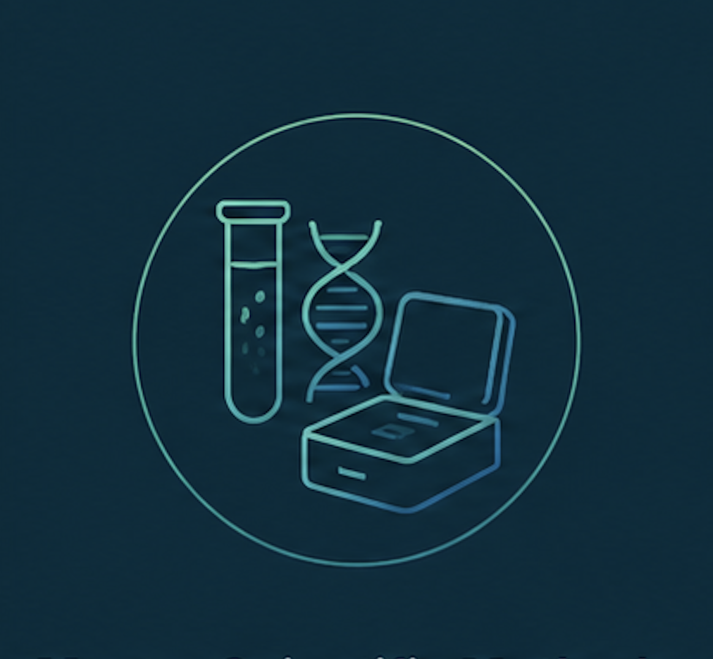

01

Fieldwork
Sampling the ecosystem
Students design a sampling plan and collect water and soil from their local environment using sterile, repeatable methods.

The Curriculum
Seven modular units guide young people from a riverbank sample to real sequenced data, then out into the world to share what they discover. Same scientific method everywhere, adapted to the ecosystem outside every classroom door.
A Hands-On Journey into Genomics
Our hands-on curriculum transforms students into citizen scientists. Across seven modular learning units, they collect environmental samples, extract and sequence DNA using portable Oxford Nanopore technology, analyze biodiversity, and communicate their findings through scientific and creative projects. Every program follows the same rigorous framework while investigating the living world right where students stand.
Seven modular units
Units build on one another but flex to your calendar. Run them as a full year, a focused term, or a field intensive.

Students design a sampling plan and collect water and soil from their local environment using sterile, repeatable methods.

Hands-on extraction turns a cloudy sample into purified genetic material, the trace life leaves behind in water and soil.

A pocket-sized Oxford Nanopore sequencer reads DNA in real time, right in the classroom or out at the sample site.
Students match sequences to reference databases, identifying the species hidden in a single drop of their ecosystem.

Findings are added to shared biodiversity atlases, connecting one classroom's data to a growing global picture of life.

Careful field notes and lab records teach students to build a credible, reproducible scientific record of their work.

Students translate data into research posters, exhibitions, and creative projects that move their community to act.
Skills that matter
Students will have developed the knowledge, technical skills, and scientific mindset to investigate biodiversity using environmental DNA and communicate their discoveries with confidence.
Develop a strong foundation in ecology, genetics, and the role biodiversity plays in healthy ecosystems.

Plan investigations, collect environmental samples, extract DNA, operate portable sequencing technology.

Use bioinformatics tools to identify species, interpret sequencing results, compare biodiversity across ecosystems.

Communicate research with confidence while developing knowledge and responsibility to become an active nature steward.
Annual capstone
Every year culminates in a capstone where students present the biodiversity of their local ecosystem and the discoveries they made through eDNA. They explain their methods, share their findings, and reflect on what their data reveals about the local environment.
Students can compare their ecosystems with partner schools across the globe, discovering both the diversity that makes each place unique and the patterns that connect life on Earth. The result is an annual celebration of science, collaboration, and a growing global understanding of biodiversity.
Local discoveries · Global comparison
Real outputs
Every cohort generates genuine, contributable data and finds its own voice to share what that data means.
Sequenced reads, species identifications, and field records become real datasets added to shared biodiversity atlases.
Students write and present the narrative behind their numbers, making biodiversity vivid for their community.
Art, film, and exhibitions translate genomic discovery into work that inspires action far beyond the classroom.
For teachers and schools
We help educators run the full program: curriculum, training, portable sequencing hardware, and a global network of schools reading life together. Tell us about your students and the ecosystem outside your window, and we will build a pilot that fits.